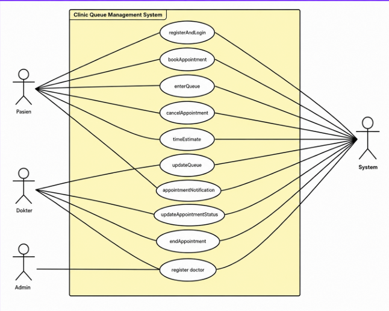
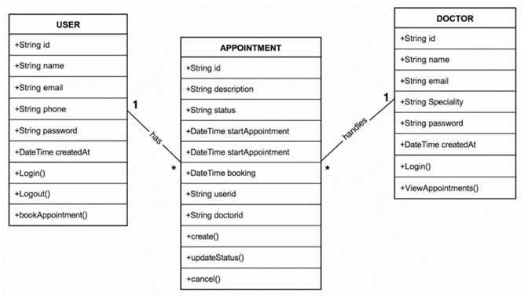
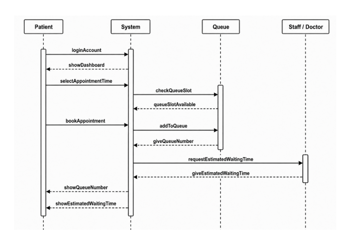
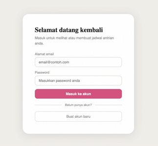
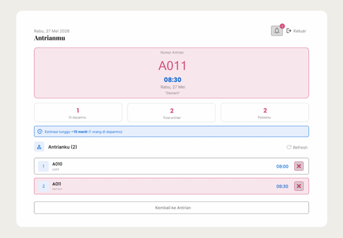
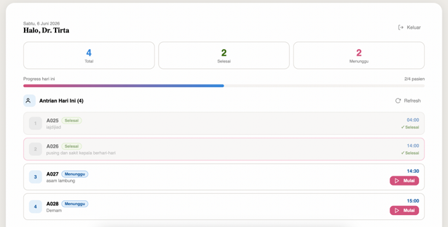

QCare is a web app that replaces a clinic's paper queue number and walk-in sign-in with online booking. Patients describe their complaint, pick an open appointment slot, and track their position and estimated wait time from their phone — while doctors get their own dashboard to move patients from waiting to in-session to done, and admins can register new doctors into the system. I was Scrum Master and a backend developer on a five-person team, building it over four one-week sprints.
Manual clinic queues mean showing up in person just to get a number, then waiting with no real sense of when you'll actually be seen. For the clinic, paper-based patient and schedule records are easy to mismanage and make it hard for staff to track who's next.
The team ran four one-week sprints, each with its own focus, planned and reviewed through standard Scrum ceremonies (sprint planning, daily scrum, backlog refinement, sprint review, retrospective). As Scrum Master, I set the sprint schedule and requirements alongside our product owner.
Login and register, including biodata, email and phone number — the foundation that let both patients and clinic staff get into the system under their own role.
Complaint input, appointment time selection with priority for whoever books a slot first, a live queue-count display, and the admin page for adding doctors.
The current-queue view, wait-time estimation, appointment cancellation, notifications, and bug fixes carried over from Sprint 2.
Final refinements, Sprint 3 bug fixes, and deploying the app so QCare could be used online.
Before writing frontend code, the team modeled the system with UML: a use-case diagram to map out who does what, a class diagram for the core data, and a sequence diagram to trace exactly how a booking moves through the system.



QCare runs as a hosted web app on a managed backend, chosen to keep infrastructure overhead low for a four-sprint academic timeline.
Every screen maps to a step in the patient's visit — or to what the clinic needs to keep it running.
Patients sign up with name, email, phone and password, then log in to book — the account layer built in Sprint 1.
A step indicator (Keluhan → Review → Konfirmasi) walks patients through describing their complaint and picking an open time slot; already-booked slots are locked from selection.
After booking, patients see their queue number, people ahead of them, and an estimated wait time — with a confirm-to-cancel modal to prevent accidental cancellations.
Doctors see today's total, completed and waiting patient counts, a progress bar, and the active session — moving a patient's status from Waiting to Ongoing to Done with a running timer.



QCare was tested two ways: black-box testing against 13 functional scenarios (login, booking, cancellation, doctor status changes, admin doctor registration, notifications — all passing), and a UX review against Shneiderman's Eight Golden Rules of Interface Design.
One layout, palette (white, light grey, pink accent) and button style across every page.
A step indicator and time-slot grid shorten the booking flow to a few taps.
Booking confirmations, live queue status, a real-time exam timer, and turn notifications.
A confirmation screen with queue number and wait estimate marks booking as clearly done.
Booked slots lock automatically and required fields (complaint, time) can't be skipped.
Patients can cancel while waiting, with a confirmation modal to catch accidental taps.
Patients control scheduling and cancellation; doctors control when a session starts and ends.
Queue number, position, people ahead, and wait time are all shown on-screen at once.
As Scrum Master, I split my time between coordinating the sprint process and writing backend code alongside four teammates.